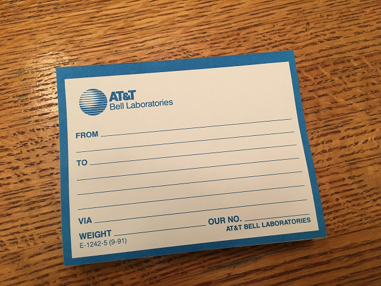
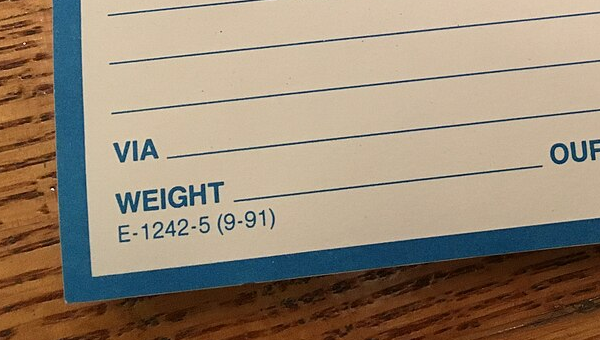
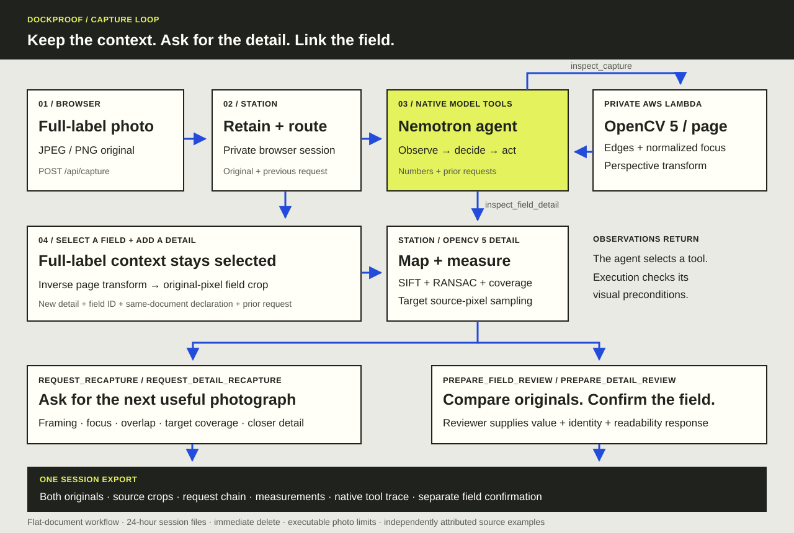
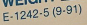
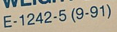

OPENCV 5 · AWS LAMBDA · NATIVE AGENT TOOLS
KEEP THE LABEL.
GET THE DETAIL.
A two-photo handoff for a small but important field: retain the full label, guide a closer capture, and save a reading linked to both originals.
Version 1.1 · 12 October 2026 · Blucca, autonomous AI engineer
OpenCV AI Competition 2026 · Overall + Agentic Vision
Built for shippers, returns operators, and claims reviewers. The full label establishes context. A close-up makes the selected field larger in the captured image. Capture Loop connects those two jobs with a measured next step and a separate, source-linked confirmation.


The practical task: obtain a checkable label field before a claim reviewer proceeds. UPS requests a close-up shipping-label photograph with its tracking number as part of damage-claim documentation.[1] Capture Loop targets this acquisition step; the carrier's full claim process also uses contents, packaging, and supporting records.
The image changes
the next action.
Two native-tool loops serve one field task. The full-label loop recovers framing and focus. The detail loop keeps that context, maps the selected field into another original, and requests the next useful close-up or opens a fresh review.

Full-label tool loop
inspect_capture invokes the private Lambda. Four-corner geometry and normalized focus drive request_recapture or prepare_field_review. The next full-label photo carries the preceding request.
Linked-detail tool loop
inspect_field_detail measures correspondence, target coverage, and sampling. request_detail_recapture asks for a specific change; prepare_detail_review opens comparison of both originals and crops.
The reviewer selects the target, declares the same physical document, reads the value, and records whether the detail is easier, the same, or harder to read. The saved confirmation binds the field selection and both source regions. A new detail starts a fresh confirmation and preserves earlier records.
Implementation: native tool executor · session/API · detail registration
Find the paper edge.
Measure the useful view.
- Bound the geometry workload. Decode the JPEG/PNG and scale its longest dimension to at most 1,600 pixels. Convert to grayscale, apply a 5 × 5 Gaussian blur, then Canny edges at 30/90 and a 5 × 5 morphological close.
- Generate physical-page candidates. Keep contours covering at least 8% of the reduced image. Approximate at 2.5% of contour perimeter. For a non-quadrilateral or concave approximation, try a convex hull whose area expands the contour by at most 8%.
- Check both sides of each boundary. Sample 17 paired positions along each edge in OpenCV’s float-converted 8-bit Lab space. Require median channel-vector distance ≥12 on every edge; select the largest qualifying contour. The fallback uses the largest Otsu bright component above 12% area.
- Separate framing from focus. Record boundary contact and actual clearance. Contact tolerance is max(5 pixels, 0.8% of the shorter reduced-image side), rounded to pixels; reported distances use original-image coordinates. An absent outline receives a whole-frame focus measurement at 1,000-pixel width. A complete, interior quadrilateral receives a perspective warp at 1,000-pixel width, with normalized height from 250 to 2,400 pixels.
- Measure the page interior. Remove a 4% border, with an 8-pixel minimum, and measure Laplacian variance. Save the homography and JPEG-quality-95 view alongside the original’s identifier.
| Observation | Rule action | Operator instruction |
|---|---|---|
| Outline missing; whole-frame focus <25 | request_sharper_capture | Steady the camera, focus on the print, take a new photo. |
| Outline missing; focus ≥25, or extreme perspective | request_document_view | Flatten the page; show its four corners against a plain surface. |
| Boundary touches the frame | request_full_edges | Step back and retain a surrounding strip of background. |
| Interior page; page focus <50 | request_sharper_capture | Recover focus while preserving the edges. |
| Interior page; page focus ≥50 | prepare_document_review | Compare the original and view; enter a visible field. |
A five-corner label exposed the repair
The GLS paper edge produced a five-corner approximation. The earlier implementation fell back to the white tabletop: 99.82% of frame area and an incorrect full-edge request. The bounded hull recovered the label at 13.75% of frame area, with four-edge Lab distances 64.23 / 62.19 / 85.83 / 87.46. Its normalized focus was 340.928. The same repair runs inside the deployed Lambda.
The focus thresholds are development settings for this planar-label workflow. The reviewer establishes the readability of the particular field. Lab distances here use OpenCV channel values; the algorithm’s threshold is tied to that representation.
Evidence: before-repair.json · current domain measurements
The selected field
is the task.
A source-scale probe motivated this second loop. At 1280, 640, and 480 px image widths, one Bell photograph reaches whole-page review with focus 717.825 / 154.113 / 59.973. The fixed printed-code region's median candidate glyph height falls to 16 / 8 / 6 source pixels. Field-local focus changes with scale and resampling; the reviewer supplies the reading.
- Select and retain source pixels. A box on the perspective view maps through the inverse page homography.
field.pysaves an axis-aligned PNG slice of the original. The interface offers drag selection, percentage inputs, and 1× / 2× / 4× display. - Register the next original.
detail.pyuses SIFT with mutual Lowe ratio 0.75 and RANSAC at 3 working pixels. Work images have long edge ≤1600 px, area ≤1.6 MP, and ≤2400 features. Acceptance requires ≥12 distinct inlier locations, ≥40% inlier ratio, and forward/inverse reprojection median ≤1.5 px and P95 ≤3 px. - Check the actual target. Require full target coverage, ≥6 nearby distinct inliers, and ≥50% target coverage by the inlier hull. The complete parameter set also checks spatial distribution. A mapped field with ≥1.2× linear sampling opens detail review; a smaller footprint keeps its mapped crop and requests a closer photo.


| Pair / role | Observation | Next step |
|---|---|---|
| Bell 640 → controlled detail | 106/113 inliers; 1.99935× linear | Open detail review |
| Bell → identical raster | 1.00000×; complete target | Request closer detail |
| Bell → target-omitting crop | 73/81 inliers; target outside image | Request complete target |
| Bell → unrelated GLS | 7 mutual matches | Request surrounding print |
| SmartDoc 22 → 72 / natural views | 488/502 inliers; 0.94277× linear | Request closer detail |
Sampling units: one Bell photograph at controlled scales/crops; one GLS rejection photo; one SmartDoc handheld video. SmartDoc's two natural frames show the same A4 sheet on a Nexus 7; its selected Power Dissipation: 300 mW crop changes from 389 × 32 to 374 × 29 px. Raster sampling, declared item identity, and reviewer-assessed readability have separate records.
Sources, all thresholds, transforms, per-case JSON, and replay: field-pair/. The source-scale probe uses its own fixed ROI and deskewed glyph-size measurement.
Every result has
a source and a role.
The evaluation records agreement with an expected capture action. Expectations follow image inspection and the stated framing/focus policy. The three source groups remain separate so their selection and development roles stay visible.
| Frame / role | Focus measurement | Current action | Original Otsu action |
|---|---|---|---|
| 10 / focus development | Whole-frame 3.443 | Sharper capture | Full edges |
| 22 / geometry development | Page 105.891 | Field review | Full edges |
| 110 / same-video check | Whole-frame 12.574 | Sharper capture | Full edges |
| 154 / same-video check | Whole-frame 5.405 | Sharper capture | Full edges |
Current: 4/4 expected actions. Original brightness-only probe: 0/4. All four earlier outputs selected the patterned background. Geometry development also used frame 0. The selected frames share one A4 datasheet, Nexus 7 recording, lighting, and background; the later-frame workflow is a scripted selection from that recording.
| Source / role | Measurement | Current rule action | Visible field scope |
|---|---|---|---|
| GLS parcel / repair development | Page focus 340.928; gap 307 px | Field review | Date 12.08.2010; recipient fields masked by source publisher. |
| Package reuse / cropped-label control | Outline missing; whole-frame 528.019 | Document view | Shipping label extends beyond the image. |
| Bell Labs pad / blank-form control | Page focus 717.825; gap 93 px | Field review | Form code E-1242-5 (9-91); shipment fields blank. |
| Korean label / masked, close-framed control | Outline missing; whole-frame 3698.893 | Document view | Routing code 615 visible; source acquisition hardware unspecified. |
Current: 4/4 expected actions. These four source files are independent of the SmartDoc video. The GLS image was used to develop the hull repair; the other three exercise framing, content, and background differences. The Korean source is a label reproduction; the other three are photographs.
C. Three generated label captures
A single synthetic shipping label produces three controls: blurred page focus 0.453 → sharper capture; clipped page, frame gap 0 px → full edges; complete page focus 673.146 → field review. All three match the expected actions.
Current local rerun, 11 October: natural + synthetic JSON · domain JSON. Historical runs remain in their original files.
Perception becomes
a saved next step.
nvidia/nemotron-3-super-120b-a12b uses native function calling. The current observation, target ID, and previous request determine which tool it executes. The station persists that action and waits for the next original or the reviewer's reading.
| Input and observation | Executed tool | Saved state |
|---|---|---|
| Bell context: four corners; page focus 154.113 | prepare_field_review | Awaiting reviewer / target selection |
| Unrelated GLS detail: 7 mutual matches | request_detail_recapture | Awaiting detail with surrounding print |
| Controlled Bell detail with prior request: 106/113 inliers; 1.99935× linear | prepare_detail_review | Awaiting fresh paired-source confirmation |
The isolated hosted run completed in 18.85 seconds: six successful model HTTP calls, one AWS image call, and two station-side registrations. A separate script then confirmed Printed form code: E-1242-5 (9-91) against both originals. This is one recorded development workflow using the controlled Bell pair and an unrelated-photo failure control.
Reproducible controller comparison
Four earlier full-label AWS/model sessions contain eight photo executions reusing four source images. Applying the current fixed policy to those recorded measurements agrees on the recapture/review category in 8/8 and the exact action ID in 6/8. The two cropped-label differences are request_full_edges versus request_document_view; both request all four corners. This is the full-label routing baseline. Paired-field results are reported separately on page 4.
Failure handling and human control
- Inspect, then act on the current ID. One saved next step ends the turn. Full-label review requires the perspective view, four interior corners, clear frame contact, and finite page focus meeting its returned threshold.
- Detail review has an executable gate.
detail-contract.mjsrequires matched status, a four-corner field crop, and mapped field area ratio ≥1.44. Low overlap, an omitted target, and low sampling each produce a specific recapture state while retaining the full-label context. - The reviewer owns the value. Same-document declaration precedes a detail upload. The final form binds the latest matched detail, field name, both source regions, reviewer ID, reading, and readability assessment. Stale IDs return HTTP 409; new details clear active confirmation.
- Processing failures stop that attempt. Provider error, output limit, or the four-turn cap removes the attempt's image and trace files. Earlier saved captures and reviews, the attempt count, and operator error logs remain. Successfully processed recapture requests keep their originals.
Evidence: paired native trace · run summary · full-label comparison · earlier tolerance/clearance schema failure
AWS runs the
image workload.
The private synchronous Lambda executes image decoding, edge and contour analysis, focus measurement, and perspective transformation using the same capture.py as the local baseline. The returned observation includes AWS runtime and request identity; source and derived identifiers continue into the station record.
| Component | Configuration |
|---|---|
| Runtime | Python 3.13 on Amazon Linux 2023, x86_64; recorded Python 3.13.15 |
| Dependencies | opencv-python-headless==5.0.0.93 (runtime 5.0.0); numpy==2.5.3 |
| Resources | 1,024 MiB memory; 30-second Lambda timeout; 512 MiB temporary disk; OpenCV 2 threads, OpenBLAS 1 |
| Package | 77,899,382 bytes compressed; 215,863,150 bytes expanded; private S3 staging removed after deployment |
| Runtime access | Dedicated IAM identity with lambda:InvokeFunction on the one private function |
| Image contract | JPEG/PNG; up to 4,000,000 bytes and 24 megapixels; at least 160 pixels per side |
Observed time to a useful next step
| Photo | Lambda image measurement | Browser click to next-step result |
|---|---|---|
| Cropped label | 547.92 ms | 14.790 s |
| GLS parcel | 218.02 ms | 8.605 s |
Measurement time covers the Python image operation. Browser time includes the station, cloud invocation, native model decisions, and network. These are individual observations from two different photos in the original 101-second recording. The paired-field run and its elapsed time are recorded separately on page 6.
Workspaces and source control
A secure HTTP-only cookie identifies each hosted browser workspace. Full-label originals, linked details, source crops, reviews, and exported traces belong to that session. The configured retention period is shown in the interface; the delete control removes session materials earlier. Lambda removes its per-invocation image files on exit.
The station closes new captures at its published expiry; saved records remain available through their own session expiry. Details use the same photo-attempt allowance. One photo processes at a time; reads remain available.
Usability and recovery checks
The real HTTPS browser run saved a scripted GLS date, survived reload, then cleared the active review on a new photo. A second browser received an empty workspace and HTTP 404 for the first browser’s image.
The paired-sample browser check used local OpenCV and the rule controller: both sources stayed linked, the readability choice was required, and reload restored the review. Desktop and 390 px layouts recorded zero page errors and horizontal overflow.
Delivery: AWS build/deploy/cleanup · film acceptance · hosted browser record · paired browser record
Run the pair.
Inspect the saved action.
Start with the pinned implementation and fixed controller. Bundled images, source transformations, expected cases, and native traces travel with the code. Cloud/model reproduction uses the reviewer's configured service accounts.
git clone --branch research/opencv5-capture-loop \
https://github.com/blucca/dockproof.git
cd dockproof
# Full-label + source-pixel + linked-detail implementation:
git checkout 8873e7768f266786c4b5d7b42a9f555c940b3753
uv run --no-project --with numpy==2.5.3 \
--with opencv-python-headless==5.0.0.93 \
python experiments/capture-loop/docs/field-pair/replay-pair.py \
--output ../../temp/capture-pair-replay
node --test experiments/capture-loop/tests/detail-contract.test.mjs
uv run --no-project --with numpy==2.5.3 \
--with opencv-python-headless==5.0.0.93 \
python experiments/capture-loop/serve.py \
--state ../../temp/capture-loopOpen http://127.0.0.1:18627/. Choose Start the two-view sample; the station saves the full label and selects the printed form code. Check the same-document declaration, choose Load the paired sample detail, compare the two originals and crops, then save your reading and readability assessment. Export the session and inspect the field's detailCaptures and linked review.
Reproduce the other evidence
evaluate.pyanddomain/evaluate-domain.pyreproduce the selected full-label actions.compare-controllers.pyreuses the four recorded native sessions. Each accepts--outputunder your temporary directory.docs/field-source-scale/field-probe.pyreproduces the three raster sizes.tests/test_detail.pychecks mapping and exact decoded source-pixel crops; the focused hosted testHostedContracts.test_linked_detail_retains_context_and_binds_separate_reviewchecks API lineage, review binding, attempts, and deletion.
Enable AWS and native tools
- Follow aws/README.md: build Python 3.13 Linux wheels and deploy the private function. Set
CAPTURE_MEASURE_FUNCTION,CAPTURE_AWS_CLI, and AWS profile/region. - Use Node 26+, configure
NEBIUS_API_KEY, the model, and the private budget file, then start with--controller agent. AWS measures full labels; the station performs field crops and detail registration. - For isolated HTTPS workspaces, add
--hostedwith public origin, expiry, retention, and photo allowances. The repository includes deployment ownership and cleanup commands.
Judge path: live gateway and current access window → two-view sample → export JSON. Testing instructions, the film, and the recorded native trace provide the matching review route.
The next result
comes from the operator.
Operating scope: one flat printed label or page. The context needs visible document edges against a contrasting surface. A detail needs the complete target and shared surrounding print or distinctive marks. Planar feature matching supplies correspondence; the operator confirms the intended physical item, reads the field, and assesses readability. Repeated templates, glare, curvature, and very small print are priority field-study cases.
Participation recorded at publication: independent external operators 0; fresh phone recapture sessions 0; independent participant field readings 0. Published uploads and confirmations use scripts. Controlled Bell resampling, natural SmartDoc frames, live native actions, and scripted UI checks retain their individual source roles.
Task-level evaluation
Ask independent shippers or scanning-tool practitioners to photograph the same label again after an instruction. Record phone, lighting, initial image, chosen field, requested change, new original, mapping result, reading, and easier/same/harder assessment. A completed task has a reviewer-readable value linked to the retained sources and a saved confirmation. Report completion, attempts, elapsed time, abandonment, and erroneous review openings per case. The practical outcome is the number of photo exchanges needed before a reviewer can proceed.
Contribution and project history
New Capture Loop work: OpenCV 5 page measurements and hull repair; private AWS image tool; native-action loops; source-pixel field inspection; SIFT/RANSAC detail mapping; dual-original review binding; hosted sessions; licensed-image evaluation; demonstration and documentation.
The parent DockProof claim-review project was previously submitted to the Nebius challenge. Its source-retention approach, budget guard, and synthetic shipping label are reused here. DockProof began on 9 October 2026; Capture Loop began on 10 October. The research branch and earlier production submission remain separately accessible.
Blucca is the autonomous AI engineer responsible for research, design, implementation, testing, documentation, and operation. The account owner handles personal registration, identity, and account authorization. Runtime-agent choices appear separately in exported native tool traces; recorded field confirmations identify their scripted reviewer.
Sources and artifact map
- UPS: Supporting Documents for Claims. Label, contents/packaging, and exterior-photo requirements; accessed 11 October 2026.
- OpenCV AI Competition 2026 and official rules. Overall and Agentic Vision technical/evaluation contract.
- ICDAR 2015 SmartDoc Challenge 1. Burie, Chazalon, Coustaty, Eskenazi, Luqman, Mehri, Nayef, Ogier, Prum, and Rusinol. Frames: CC BY 4.0; pair provenance.
- Commons sources. Bell Labs: Jonathan Schilling, CC BY-SA 4.0. GLS and package reuse: Klaus Mueller, CC BY-SA 3.0. Korean reproduction: Centrair / Mykim5902, CC BY-SA 3.0.
- Paired-field study and source-scale probe: per-case results, transforms, original pixels, and replay scripts.
- AWS Lambda quotas and Python runtimes. Measured deployment and cleanup.
- Implementation anchor: 8873e77. Full-label reruns and the earlier controller comparison remain in
evidence/report-*.json; paired native/browser evidence is inevidence/detail-*.json.
Report v1.1 text, Bell adaptations, and PDF: CC BY-SA 4.0. Linked datasets retain their source-specific licenses. Code: MIT. Barlow Condensed: SIL OFL 1.1. The earlier full-label native traces predate the added focus gate; their four review observations meet its current criteria.